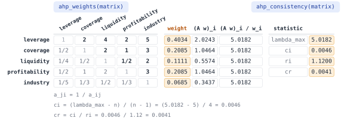

专家评分卡#
专家评分卡不是用数据拟合权重，而是由判断来设定权重。它适用于违约样本太少、无法建立统计模型的组合，例如大型企业、小微企业或新产品：信贷分析师对少数几个因子打分，由委员会决定每个因子的分量。层次分析法（AHP）让这一决定不那么随意：委员会对因子两两比较，由比较得出权重，并检验各项比较是否相互吻合。
当没有数据可供拟合时，专家评分卡取代 变量筛选 和 评分卡 中的拟合步骤。有了结果数据之后，用 模型表现 评估其评分，并用 校准 把评级校准到违约率。 ahp_weights() 把两两比较矩阵转换为权重， ahp_consistency() 度量各项比较的吻合程度， combine_weights() 把因子和子因子的权重合成为全局权重。
定义#
比较就是按 Saaty 标度做出的判断。对两个因子 \(i\) 和 \(j\) ， \(a_{ij}\) 表示 \(i\) 比 \(j\) 重要多少倍，而 \(a_{ji} = 1 / a_{ij}\) 表示反过来的情形：
\(a_{ij}\) |
含义 |
|---|---|
1 |
同等重要 |
3 |
稍微重要 |
5 |
明显重要 |
7 |
强烈重要 |
9 |
极端重要 |
2, 4, 6, 8 |
中间值 |
全部比较构成的 \(n \times n\) 矩阵 \(A = (a_{ij})\) 的对角线为 1，元素互为倒数。如果各项判断相互吻合，即任意三个因子都满足 \(a_{ij} a_{jk} = a_{ik}\) ，那么存在总和为 1 的权重 \(w\) 使 \(a_{ij} = w_i / w_j\) ，该矩阵是 一致 的。判断很少完全一致，所以 ahp_weights() 用两种方法之一来估计权重，两种方法对一致矩阵给出相同的结果。Saaty 的估计是主特征向量，
几何法则把矩阵各行的几何平均数缩放为总和 1：
对互反矩阵， \(\lambda_{\max} \ge n\) ，当且仅当矩阵一致时等号成立。因此 ahp_consistency() 用一致性指标度量不一致程度，并与随机判断平均给出的指标，即只取决于因子数的随机一致性指标 \(\mathrm{RI}\) 相比：
比值 \(\mathrm{CR}\) 即一致性比率。Saaty 的经验法则是，比率不超过 0.1 的判断一致性足够好，可以使用，Saaty（1994 年）后来又把限值收紧为：三个因子 0.05，四个因子 0.08。3 到 15 个因子对应的随机一致性指标，按 Obata 和 Shiraishi 列出的 Tone（1986 年）的表，依次为 0.58、0.90、1.12、1.24、1.32、1.41、1.45、1.49、1.51、1.53、1.56、1.57 和 1.59。Saaty 的著作中 12 个因子的数值印的是 1.48，一般认为这是印刷错误。一个或两个因子的比较必然一致，因此其比率为 0。
计算示例#
对企业评分卡的三个因子做比较。分析师判断销售的重要性是利润率的 2 倍、杠杆率的 4 倍，利润率的重要性是杠杆率的 2 倍：
>>> import numpy as np
>>> import pandas as pd
>>> from kivi.expert import ahp_consistency, ahp_weights
>>> factors = ["sales", "margin", "leverage"]
>>> matrix = pd.DataFrame(
... [[1, 2, 4], [1 / 2, 1, 2], [1 / 4, 1 / 2, 1]], index=factors, columns=factors
... )
>>> ahp_weights(matrix).round(4)
factor
sales 0.5714
margin 0.2857
leverage 0.1429
Name: weight, dtype: float64
各项判断相互吻合，因为 2 × 2 = 4，所以权重分别是 7 份中的 4 份、2 份和 1 份，一致性比率为 0：
>>> ahp_consistency(matrix).round(4)
statistic
lambda_max 3.00
ci 0.00
ri 0.58
cr 0.00
dtype: float64
如果分析师改判利润率的重要性是杠杆率的 4 倍，各项判断就会相互矛盾，因为这样销售的重要性应是杠杆率的 8 倍，而不是 4 倍：
>>> inconsistent = pd.DataFrame(
... [[1, 2, 4], [1 / 2, 1, 4], [1 / 4, 1 / 4, 1]], index=factors, columns=factors
... )
>>> statistics = ahp_consistency(inconsistent)
>>> statistics.round(4)
statistic
lambda_max 3.0536
ci 0.0268
ri 0.5800
cr 0.0462
dtype: float64
这里 \(\mathrm{CI} = (3.0536 - 3) / 2 = 0.0268\) ， \(\mathrm{CR} = 0.0268 / 0.58 = 0.0462\) ：这些判断的一致性仍然足以使用。权重向利润率倾斜：
>>> ahp_weights(inconsistent).round(4)
factor
sales 0.5469
margin 0.3445
leverage 0.1085
Name: weight, dtype: float64
对两个或三个因子，特征向量法与几何法对任何互反矩阵都给出相同的权重，所以这里 method="geometric" 不会改变结果。从四个因子起，判断不一致时两者会略有差异。
确定五个因子的权重#
一家中型企业贷款机构的信贷委员会比较五个因子： leverage （负债权益比）、 coverage （利息保障倍数）、 liquidity （流动性）、 profitability （盈利能力）和 industry （借款人所在行业的前景）。一个辅助函数为矩阵的行和列加上名称。只有对角线以上的元素是判断，对角线以下的每个元素是其倒数：
>>> factors = ["leverage", "coverage", "liquidity", "profitability", "industry"]
>>> def comparison(rows):
... return pd.DataFrame(rows, index=factors, columns=factors)
>>> matrix = comparison([
... [1, 2, 4, 2, 5],
... [1 / 2, 1, 2, 1, 3],
... [1 / 4, 1 / 2, 1, 1 / 2, 2],
... [1 / 2, 1, 2, 1, 3],
... [1 / 5, 1 / 3, 1 / 2, 1 / 3, 1],
... ])
>>> weights = ahp_weights(matrix)
>>> weights.round(3)
factor
leverage 0.403
coverage 0.209
liquidity 0.111
profitability 0.209
industry 0.068
Name: weight, dtype: float64
>>> ahp_consistency(matrix).round(4)
statistic
lambda_max 5.0182
ci 0.0046
ri 1.1200
cr 0.0041
dtype: float64
权重之和为 1，一致性比率 0.004 远低于 0.1。 ahp_weights() 默认使用特征向量法； method="geometric" 在这里给出几乎相同的权重，因为该矩阵近乎一致。

ahp_weights 和 ahp_consistency 如何计算本例。对角线以上的元素是委员会的判断，对角线以下是它们的倒数。权重是矩阵的主特征向量：矩阵乘以权重等于 lambda_max 乘以每个权重，由 lambda_max 又得到 ci 和 cr 。#
修订判断#
第二位分析师判断杠杆率的重要性是流动性的 4 倍，流动性的重要性是盈利能力的 4 倍，而盈利能力的重要性又是杠杆率的 3 倍。这些判断首尾相接成一个循环，一致性比率远高于 0.1：
>>> second = comparison([
... [1, 2, 4, 1 / 3, 5],
... [1 / 2, 1, 2, 1, 3],
... [1 / 4, 1 / 2, 1, 4, 2],
... [3, 1, 1 / 4, 1, 3],
... [1 / 5, 1 / 3, 1 / 2, 1 / 3, 1],
... ])
>>> ahp_consistency(second).round(3)
statistic
lambda_max 6.481
ci 0.370
ri 1.120
cr 0.331
dtype: float64
统计量并不说明应当修订哪一项判断。把每个元素除以它应当等于的权重之比 \(w_i / w_j\) 就能看出来：比值接近 1，说明该判断与权重吻合，而离 1 最远的判断应当最先讨论。
>>> second_weights = ahp_weights(second)
>>> (second / np.outer(second_weights, 1 / second_weights)).round(2)
leverage coverage liquidity profitability industry
leverage 1.00 1.24 3.02 0.27 0.96
coverage 0.81 1.00 2.45 1.29 0.93
liquidity 0.33 0.41 1.00 4.23 0.51
profitability 3.75 0.77 0.24 1.00 0.72
industry 1.04 1.07 1.97 1.39 1.00
最大的元素，即流动性对盈利能力的 4.23、盈利能力对杠杆率的 3.75 和杠杆率对流动性的 3.02，正是构成循环的三个比较，它们的倒数则是最小的元素，因此这些比较需要分析师达成一致。比率高于 0.1 时函数不会报错，因为如何处理由委员会决定。

第二位分析师的比值。判断离权重之比越远，单元格颜色越深。最大的三个比值（与其倒数一起加了边框）就是构成循环的三项判断：杠杆率胜过流动性，流动性胜过盈利能力，盈利能力胜过杠杆率。#
为借款人评分#
分析师按 0（弱）到 100（强）的尺度，对每个借款人的每个因子打分，借款人的评分就是各因子得分的加权和。用数据框乘以权重即可得到，并且按名称把列与因子对齐，因此缺少或拼错的因子会报错，而不会被悄悄丢弃：
>>> factor_scores = pd.DataFrame(
... {
... "leverage": [80, 40, 65],
... "coverage": [70, 50, 90],
... "liquidity": [60, 30, 85],
... "profitability": [75, 45, 55],
... "industry": [50, 60, 70],
... },
... index=["Acme", "Borel", "Cirrus"],
... )
>>> (factor_scores @ weights).round(1)
Acme 72.6
Borel 43.4
Cirrus 70.7
dtype: float64
该评分随资信水平上升，而 kivi.metrics 和 kivi.strategy 期望评分随风险上升。评估时请传入 -score ，做法与 模型表现 对评分卡分数的说明相同。该评分只用于给借款人排序，不是违约概率。待机构有了结果数据，再把它校准到违约率，例如使用 校准 中的主标尺。
子因子#
层次结构在每一层单独比较因子：先比较因子组，再比较每个组内的因子。 combine_weights() 把组的权重乘以组内各因子的权重，因此全局权重之和仍为 1：
>>> from kivi.expert import combine_weights
>>> def compare(labels, rows):
... return pd.DataFrame(rows, index=labels, columns=labels)
>>> groups = ahp_weights(compare(["financial", "business"], [[1, 3], [1 / 3, 1]]))
>>> finance = ahp_weights(compare(
... ["leverage", "coverage", "liquidity"],
... [[1, 2, 4], [1 / 2, 1, 2], [1 / 4, 1 / 2, 1]],
... ))
>>> business = ahp_weights(compare(["industry", "management"], [[1, 2], [1 / 2, 1]]))
>>> global_weights = combine_weights(groups, {"financial": finance, "business": business})
>>> global_weights.round(4)
factor sub_factor
financial leverage 0.4286
coverage 0.2143
liquidity 0.1071
business industry 0.1667
management 0.0833
Name: weight, dtype: float64
财务因子的权重为 0.75，经营因子为 0.25；杠杆率占财务权重的 4 / 7，所以其全局权重是 0.75 × 4 / 7 = 0.4286。索引有 factor 和 sub_factor 两层，因此同一个子因子名称可以出现在两个因子之下。若子因子名称互不相同，去掉第一层索引后，就可以按子因子名称为评分数据框建立索引：
>>> sub_factor_scores = pd.DataFrame(
... {
... "leverage": [80, 40], "coverage": [70, 50], "liquidity": [60, 30],
... "industry": [50, 60], "management": [90, 20],
... },
... index=["Acme", "Borel"],
... )
>>> (sub_factor_scores @ global_weights.droplevel("factor")).round(1)
Acme 71.5
Borel 42.7
dtype: float64
第一个参数的每个因子都需要在 children 中有一个条目， children 不能有其他的键。没有子因子的因子对应只含一个标签、权重为 1 的 Series，例如 pd.Series({"cash_flow": 1.0}) 。
combine_weights() 合并两层，即因子及其子因子。对于三层的层次结构，请逐层合并：把去掉第一层索引的全局权重 global_weights.droplevel("factor") 作为第二次调用的第一个参数，并同时给出每个子因子下各项的权重。这要求不同因子的子因子名称互不相同，因为第一个参数的标签必须互不重复。
多位专家#
多位专家比较因子时，常见的做法是对各元素取几何平均数来合并他们的判断，这样对角线仍为 1，矩阵仍是互反的，然后对合并后的矩阵确定权重。这里群体中每个因子的权重都介于两位专家的权重之间，但这一点并不总是成立：
>>> combined = comparison(np.exp(np.mean([np.log(matrix), np.log(second)], axis=0)))
>>> pd.DataFrame(
... {"first": weights, "second": second_weights, "group": ahp_weights(combined)}
... ).round(3)
first second group
factor
leverage 0.403 0.297 0.355
coverage 0.209 0.184 0.208
liquidity 0.111 0.225 0.149
profitability 0.209 0.238 0.221
industry 0.068 0.057 0.067
一致矩阵的几何平均仍是一致矩阵，所以群体矩阵的一致性比率并不能说明专家们是否意见一致。请比较他们的权重，并讨论分歧最大的那些比较。
解读结果#
ahp_weights() 为每个因子返回一个权重，权重均为正数，总和为 1，顺序与矩阵相同。权重越大，说明该因子在加权评分中分量越重；权重是相对的，两个权重之比就是判断所隐含的一个因子相对于另一个因子的重要程度。 ahp_consistency() 返回四个统计量：
统计量 |
含义 |
|---|---|
|
矩阵的主特征值。它不小于因子数，判断一致时等于因子数。 |
|
一致性指标 |
|
|
|
一致性比率 |
比率低于阈值并不意味着权重正确。它只说明各项判断没有相互矛盾，而不是说明判断正确地刻画了借款人。
缺失值#
每一项比较都必须给出。矩阵中有缺失的元素会报错而不是被跳过，因为其他因子的权重都依赖于它。因子得分有缺失值时， factor_scores @ weights 给出的该借款人的加权评分也是缺失的；评分前请先决定缺失的因子意味着什么，例如把它记为最低等级，或者对其余因子的权重重新归一化。
局限#
权重和判断一样带有主观性。这一方法让权重变得明确、可检验，但并不能保证权重正确。不同的委员会会给出不同的权重，而权重只有在有了结果数据之后才能检验。
一致性比率不超过 0.1，说明各项比较相互吻合。判断可以相互吻合却仍然是错的，例如每一项比较都带有同样的偏见。
标度止于 9 及其倒数，因此在单次比较中，一个因子的分量不能超过另一个因子的 9 倍。大矩阵很难做出判断：超过约九个因子时，最好像子因子一节那样拆分为层次结构。
随机一致性指标最多列到 15 个因子，因子更多时
ahp_consistency()会报错。已发表的各种表中，随机一致性指标略有差异，因为它们来自规模不同的模拟，而且 Saaty 的著作中 12 个因子的数值印的是 1.48，函数使用的 Tone 的表中则是 1.53。combine_weights()一次合并两层，并且要求每个因子都在children中有一个条目；更深的层次结构要逐层合并，做法见子因子一节。这些函数只负责权重。kivi 不对因子打分，不设定因子得分的尺度，不把评分校准到违约率，也不做超出上文示例的群体判断汇总。
错误与警告#
一个因子与另一个因子的比较，必须是反向比较的倒数，满足相对容差 rtol ，其默认值为 1e-3；对角线上的 1 也按同样的容差检查。四舍五入到四位小数的元素，例如用 0.3333 代替 1 / 3、用 0.1429 代替 1 / 7，可以通过。四舍五入到两位小数的元素，例如 0.33，会报错并显示这两个元素：
>>> ahp_weights([[1, 3], [0.33, 1]])
Traceback (most recent call last):
...
ValueError: matrix must be reciprocal: the entries at [0, 1] and [1, 0] must multiply to 1, got 3.0 and 0.33
请直接写成 1 / 3 ，或者在分析师的本意就是两位小数时传入更大的 rtol 。矩阵按给定的值使用，因此权重会随四舍五入后的元素而变：
>>> pd.DataFrame({
... "rounded": ahp_weights([[1, 7], [0.14, 1]], rtol=0.05),
... "exact": ahp_weights([[1, 7], [1 / 7, 1]]),
... }).round(4)
rounded exact
factor
0 0.8761 0.875
1 0.1239 0.125
rtol 必须是有限的非负数； rtol=0 只接受精确的倒数。
对角线必须为 1，每个元素都必须是有限的正数；DataFrame 的报错会指出有问题的因子，数组则从 0 起给因子编号：
>>> bad = comparison(np.ones((5, 5)))
>>> bad.loc["coverage", "coverage"] = 2.0
>>> ahp_weights(bad)
Traceback (most recent call last):
...
ValueError: matrix must have 1 on its diagonal, got 2.0 at ['coverage', 'coverage']
DataFrame 的索引必须是单层的，并且它与列必须有相同的标签且顺序一致。 combine_weights() 要求权重总和为 1，并且第一个参数中的每个因子在 children 中都有一个条目。